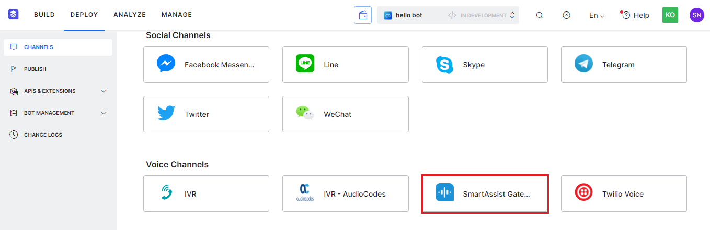
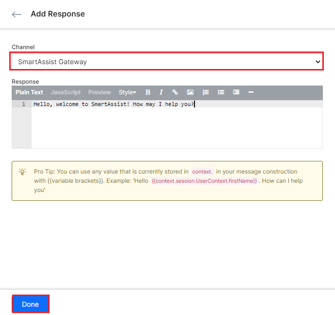
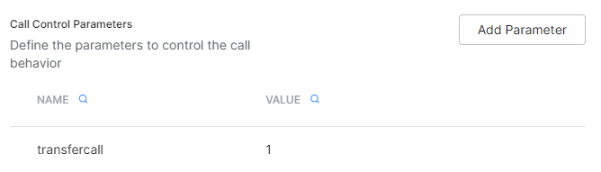

Adding the SmartAssist Gateway Channel¶
SmartAssist is a Kore.ai Contact Center Automation Solution. It helps enterprises manage their contact center infrastructure from the omnichannel interface, voice infrastructure, gateway, and live agent interactions, including agent assistance. Learn more.
Applications built on SmartAssist use the Kore.ai XO Platform’s IVR-Audiocodes channel via the underlying voice gateway interface for virtual assistant interactions. Kore.ai’s native voice gateway, SmartAssist Gateway, is now configured as a new Kore.ai XO platform channel to drive and manage virtual assistant conversations using open-source components.
Important Considerations¶
- SmartAssist Gateway, when configured as a new channel, lets you set up Voice Call Properties, and the channel overrides on SmartAssist.
- You cannot enable this channel via the XO Platform. Alternatively, you must enable the channel for the required app on SmartAssist.
- However, you should configure channel overrides from the XO Platform in the Voice Call Properties section for the new channel.
- The channel supports the channel-level Voice Call Properties supported by the IVR-AudioCodes channel. Learn more.
- The Telephony Welcome event applies to the channel.
- The system behavior for the End_ of task_ event is the same as that of AudioCodes.
- Channel overrides are supported for prompts.
- Node-level (Dialog, FAQ, Standard Responses, Events, etc.) Voice Call Properties are supported for the channel.
Configuration Overview¶
To accomplish the channel enablement, you must do the following:
- Create a new SmartAssist Application to associate with the channel or select an existing app for the association. The steps are similar to the IVR-Audiocodes channel.
- Configure the Voice Call Properties, and define the Channel-specific Prompts and Messages for any Virtual Assistants connected to your SmartAssist application.
Prerequisites¶
Before configuring the SmartAssist Gateway channel, please ensure the following:
- You have a SmartAssist account.
- You’ve completed the voice channel configurations on SmartAssist. Learn more.
- You have associated an app with the channel.
Configuration Steps¶
Once you’ve created a SmartAssist app on SmartAssist, follow the steps below to complete the channel configuration:
Note: This channel is auto-enabled when you create a new SmartAssist application.
Define the Voice Call Properties¶
To define the voice call properties specific to the SmartAssist Gateway, follow the steps below:
-
Navigate to DEPLOY > CHANNELS, and click SmartAssist Gateway under Voice Channels. 
-
Click the Voice Call Properties tab in the SmartAssist Gateway window. Learn more on Voice Call Properties.
{kind=link}
Step 1: Configure the End of Task Behavior¶
Select one of the following options for End of Task Behavior to define the bot behavior on reaching the End of task flow:
- Trigger End of Task Event: When this event is triggered, the bot ends the call and initiates any task like Feedback Survey, Fallback, Dialog generation, etc., linked to the event.
- Terminate call: The bot ends the call without triggering any event-based tasks.
Step 2: Event Configuration¶
To define the follow-up task when an event is detected, follow these steps:
Note
You can also manage this event from the Natural Language > Event Handlers page.
- Select one of the following options:
- Initiate Task: Initiates the task you select from the list.
- Run Script: Run the script code you define.
- Show Message: Displays the response message you define.
-
After selecting Show Message, click the + Add Response button.

-
Select SmartAssist Gateway from the list for Channel in the Add Response window.
- Add the response text in the input field for Response.
- Click Done. 
{kind=link}
Tip
You can use any value currently stored in the context variable of your message construction with {{variable brackets}}. For example, ‘Hello {{context.session.UserContext.firstName}}. How can I help you?’ This helps personalize the response message.
Step 3: Select the Call Termination Handler¶
Select the intent(dialog) you previously created from the list to handle the Call Termination event. This initiates the relevant task for the event flow.
Step 4: Define the Call Control Parameters¶
Define the parameters to control the call flow behavior by following the steps below:
- Click Add Parameter.
- In the Add Call Control Parameter window, input the Parameter name and Parameter value.
- Click Save.
The new call control parameter is listed on the SmartAssist Gateway window, as shown below. \ 
{kind=link}
Step 5: Define the Timeout Prompt¶
To define the prompt played when the user input is not received within the timeout period, follow the steps below:
- First, provide the text in the Timeout prompt input field.
- Next, hit enter.
Step 6: Define User Input Parameters¶
To define the key parameters for user input management, follow the steps below:
- First, provide values for the following fields:
- Barge-in: Select YES to allow the user’s input while a prompt is in progress. Otherwise, select No.
- Timeout: Select an option from the list (0 seconds to 60 seconds) to define the maximum wait time to receive the user’s input.
- No. of Retries: Select an option from the list (1 to 10) to define the maximum number of user input retries allowed.
- Next, click Save.
Note
You don’t have to enable the channel explicitly since it is auto-enabled.
After the channel is enabled and all configurations are verified, you can optionally publish the assistant to make it available for end users with the new channel. Learn more about Publishing your Virtual Assistant.
To learn more about working with Channels within the Kore.ai XO Platform, please see Channel Enablement.